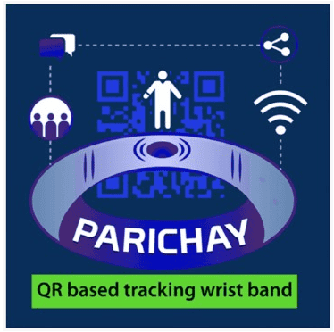
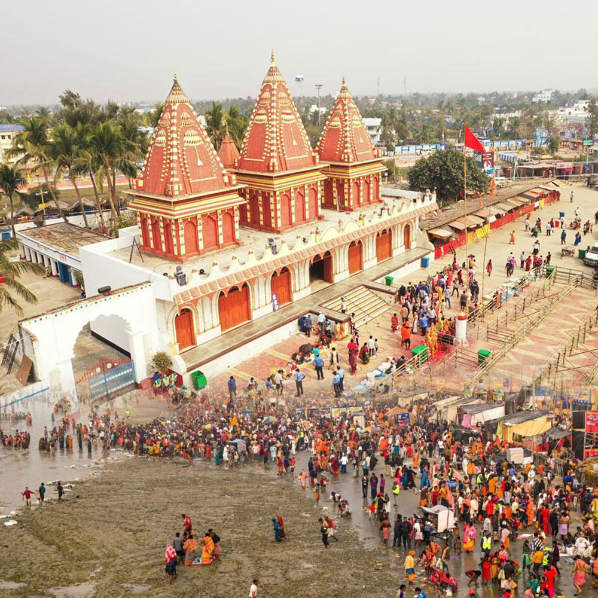
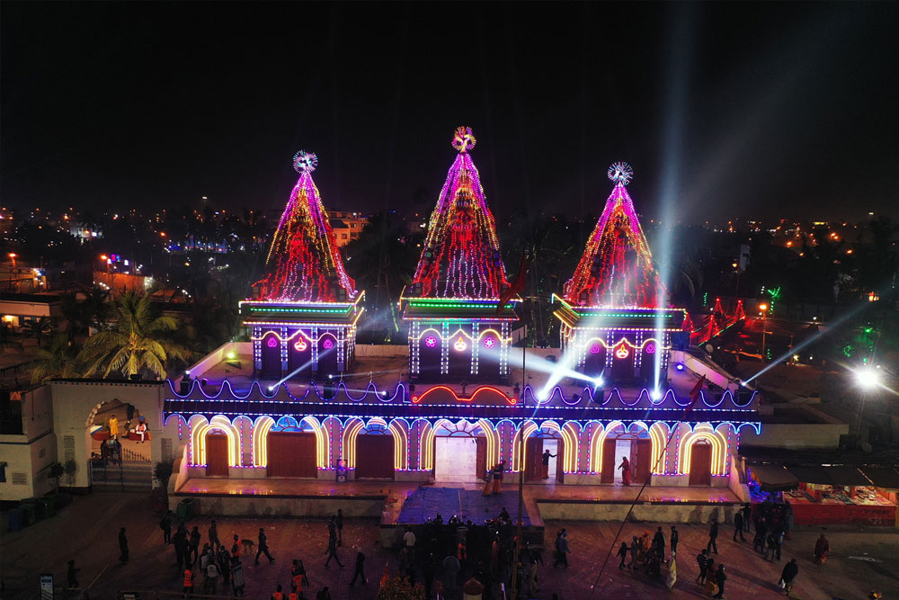
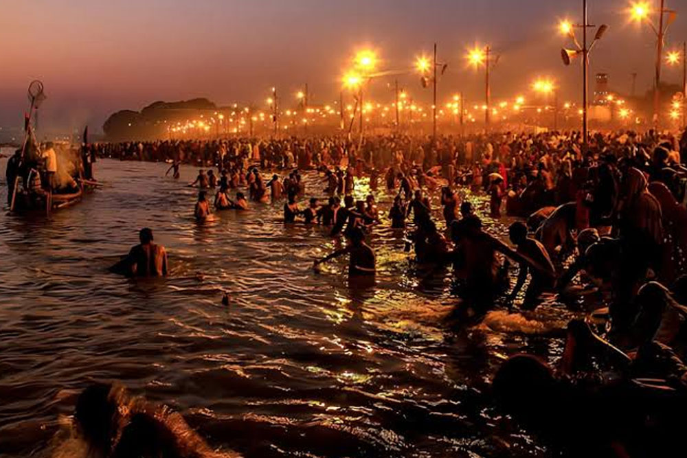
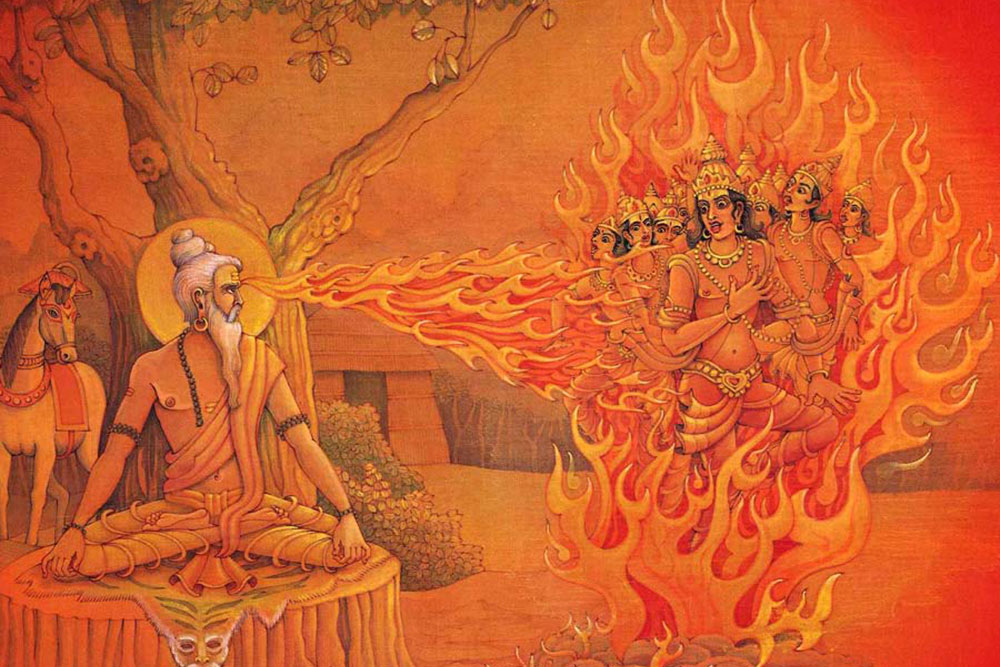

How to Reach
Explore seamless travel options by air, rail, or road, and start your journey seamlessly.
Explore RoutesExperience the divine confluence of the Ganga and the Bay of Bengal. A timeless journey of devotion, culture and the serene beauty of the sea.
Explore the initiatives and services of Gangasagar


This phrase shares the essence of Gangasagar that course through the minds of the devotees who have been through this larger-than-life experience. Legends say that the journey to Gangasagar was interlaced with dangers at every step. The devotees had to pass a jungle of wonders where the land had the danger of Tigers and the waters were frequented by crocodiles. Yet, evey year they all embarked on this holy journey to the south-most point of island at least once in the life time in search for moksha. This brings up the notion “Sab Tirth Bar Bar, Gangasagar Ekbar".
However, now through immense planning and development by the administration this pilgrimage has become much safe and secure. Millions visit the mela ground and take a dip in the holy waters to rid their lives of their worries and attain nirvana.
Helpful information and essential services to make your journey comfortable, safe and memorable.
Explore seamless travel options by air, rail, or road, and start your journey seamlessly.
Explore RoutesExplore our curated list of accommodations and book your serene retreat.
Find AccommodationExplore nearby attractions, including popular locations like The Sagar Beach, Bakkhali and more.
View PlacesGet important visitor assistance, safety information and emergency contacts.
Get Assistance“Sab Tirtha Bar Bar, Gangasagar Ekbar”
A sacred journey that lives in every heartDiscover the sacred beauty, rich cultural heritage, and natural charm of Gangasagar. From the holy Kapil Muni Temple and serene beaches to scenic landscapes and nearby attractions, explore the unique places that make Gangasagar a memorable destination for pilgrims and travellers alike.
Explore the rich history, deep-rooted social traditions and mythological significance that make Gangasagar a sacred destination of faith and devotion.



Explore, experience and embrace the spirit of this sacred destination.